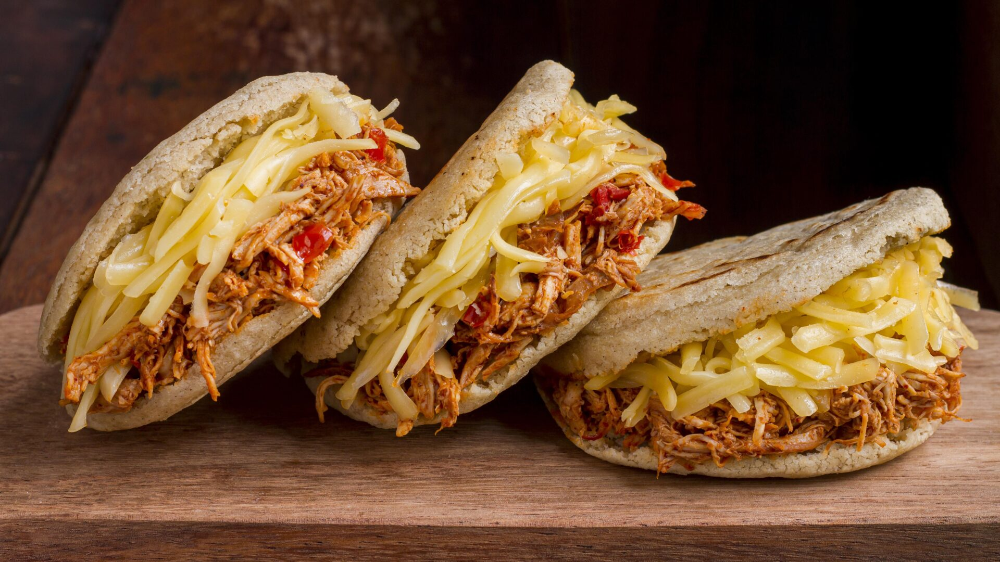

Arepas
Un clásico en cada desayuno colombiano. Se preparan con harina de maíz, agua y sal. Puedes acompañarlas con queso, mantequilla o aguacate.
Ver recetaUn clásico en cada desayuno colombiano. Se preparan con harina de maíz, agua y sal. Puedes acompañarlas con queso, mantequilla o aguacate.
Ver receta
Plato típico de Antioquia que incluye fríjoles, arroz, carne molida, chicharrón, huevo frito, arepa, plátano maduro y aguacate.
Ver receta
Sopa tradicional de Bogotá, hecha con tres tipos de papa, pollo, mazorca de maíz y guascas, acompañada de arroz, aguacate y crema de leche.
Ver receta